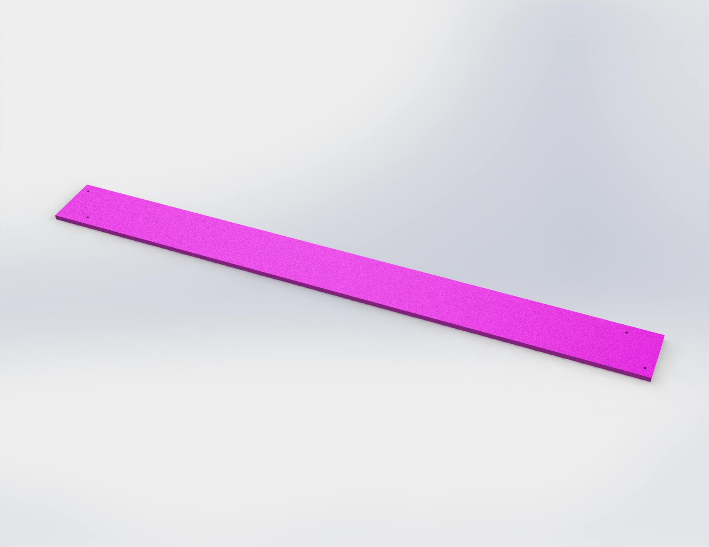
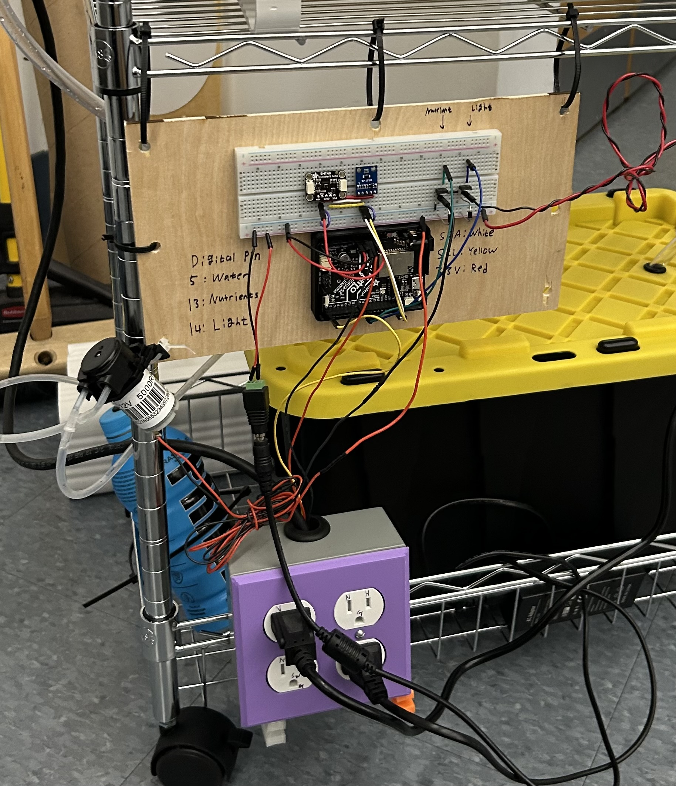
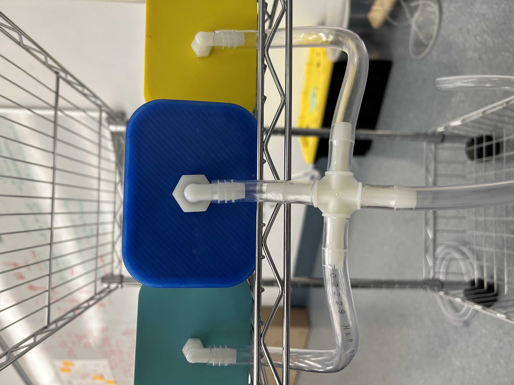
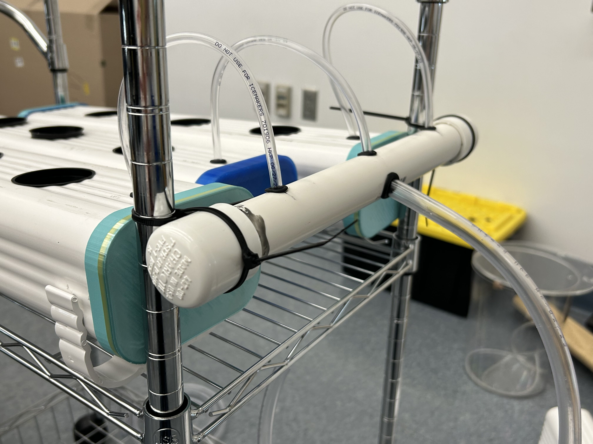

Sprint II
Sprint Overview
The goal of sprint II was to improve upon sprint 1 by
- Housing all components on a cart
- Build modular plant channels
- Fully automated light & pump actuation
- Making it aesthetically pleasing.
Mechanical Updates
For the second stage of our project, we moved our system onto a cart and expanded our system to include 3 channels to accommodate a total of 9 plants. With more sophisticated materials, we were tasked with preparing the materials with proper cuts, hole sizes, and sealants to assemble our modular design.
A big challenge for Sprint II was purchasing the correct materials for our design. It was a learning experience to modify our mechanical design based on the availability of materials at Home Depot, specifically the hose barbs (downspouts). To conserve our funds for materials, we decided not to purchase end caps for the gutter channels. We 3D-printed our end caps with PLA, but one of these prints had a leakage due to a larger layer height compared to the successful, watertight PLA end caps. We also replaced our trash-can-water-reservoir with an opaque plastic tote bin that would easily fit in the bottom of our cart, and could be sealed with a lid. This would prevent the growth of algae in our water, and also stop any spilling with movement of the cart.
Rather than using a small peristaltic pump to transport water to the plants, we decided to use a submersible (sump) pump because it pumps more water at a faster rate than the peristaltic pumps. Instead, we used the peristaltic pump to transport the nutrient-rich solution from the nutrient bottle into the water basin. For waterproofing, we implemented rubber gaskets (o-rings) and rubber grommets. We used the rubber gaskets and gutter sealant to waterproof the connection between the hose barbs and the 3D printed gutter end caps. We used rubber grommets to waterproof the connection between the tubing and the vinyl gutter or the pvc pipe in which the water is diverted.
The mechanical structure to support the electronic hardware was lower on the priorities for this sprint, and we used a piece of balsa wood to mount the breadboard and microcontroller. We mounted the power box/outlet at the bottom of the cart using the same exact 3D printed L-shaped hooks that we used in Sprint I. In an attempt to mount the LED grow lights in a simplistic manner, we laser cut strips of acrylic.
For this sprint, we used zip ties to fasten the acrylic strips, the sump pump, the pvc pipe, and the balsa wood mount.
We used a basic Home Depot storage box to act as a water basin, and used a 3x4x12 feet vinyl gutter as the basis for our canal. We cut the gutter into 3 equal pieces, and set them up parallel to each other, before drilling 3 holes into each piece to later add seed containers. We then bought PVC tubing and endcaps, and watersealed the PVC tube before drilling small 3 inlet and 1 outlet holes, which we then fitted with grommets to ensure waterproofing. Next we fit tubing through the PVC, with inlet tubing connected to a larger sump pump inside our base, and outlet tubing being split among the 3 small outlet holes, which each flowed into one of the 3 canals. Finally each of the three canals has tubing which all connect to a central bracket, which ultimately leads back to the canal.
 Reasons for Design
As we mentioned above, our main principles for our final design were to be an inviting, convenient design that could grow multiple plants and fit in easily in any environment. We chose a cart to act as our frame because it is easy to move around and can be moved to wherever is most convenient, with an open top to act as a table so it can be used by the grower. Having multiple canals is one of the most material and space efficient ways to maximize plant growth, and having a central basin greatly simplifies re-adding nutrients.
Electrical Updates
For this sprint, we added 2 more actuators to our circuit. In addition to the water pump from Sprint I, there is now a nutrient pump and LED growth lights. We also added an illuminance sensor in addition to the temperature/humidity sensor we had before.
The circuit schematic for this sprint is shown below.

Software Updates
The biggest software change from Sprint I is that there are now 3 different actuators (water pump, nutrient pump, growing light) that runs on their own respective schedule. While both pumps still run on a simple millis() loop, the light uses actual time (ex. Turn on at 11:50 AM, turn off at 1:00 PM) for scheduling.
Sprint Reflection
The mechanical component's main goals were to be completely waterproofed, and have a working pump and water flow sufficient to grow plants. All of these goals were met, as well as integration of the electrical components into our design without compromising our design goals. However, electrical housing and pump attachment were ultimately not polished to the level we would like, while they were both functional, they did not meet our team's standard of aesthetics, nor the functionality of transporting the cart without damaging the components. We also did not consider the material safety for consumption, and resolved to do further analysis next sprint.